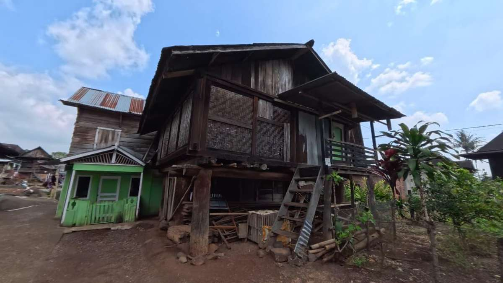

Ghuma Baghi Sasak
Sebuah jenis rumah adat yang memadukan arsitektur rileks dengan pola bangunan terbuka.
Karakteristik
Ghuma Baghi Sasak merupakan salah satu variasi rumah adat Besemah yang memiliki karakteristik pada bentuk konstruksi dan susunan ruangnya. Istilah "sasak" merujuk pada teknik atau bentuk penyusunan bagian rumah yang dirancang untuk menghasilkan bangunan yang kuat dan mampu menyesuaikan dengan kondisi lingkungan.
Rumah ini dibangun di atas tiang-tiang kayu yang kokoh sehingga terlindung dari kelembapan tanah serta memberikan sirkulasi udara yang baik. Material utama yang digunakan berasal dari kayu lokal yang terkenal kuat dan tahan lama.
Ghuma Baghi Sasak tidak hanya memiliki fungsi sebagai tempat tinggal, tetapi juga sebagai pusat aktivitas keluarga dan pelaksanaan tradisi masyarakat. Tata ruangnya mencerminkan nilai kebersamaan, penghormatan kepada tamu, serta hubungan yang erat antaranggota keluarga. Keberadaan rumah ini menjadi bukti kemampuan masyarakat Besemah dalam mengembangkan arsitektur tradisional yang sesuai dengan kebutuhan dan kondisi alam di wilayah Pagar Alam.
Contohnya
